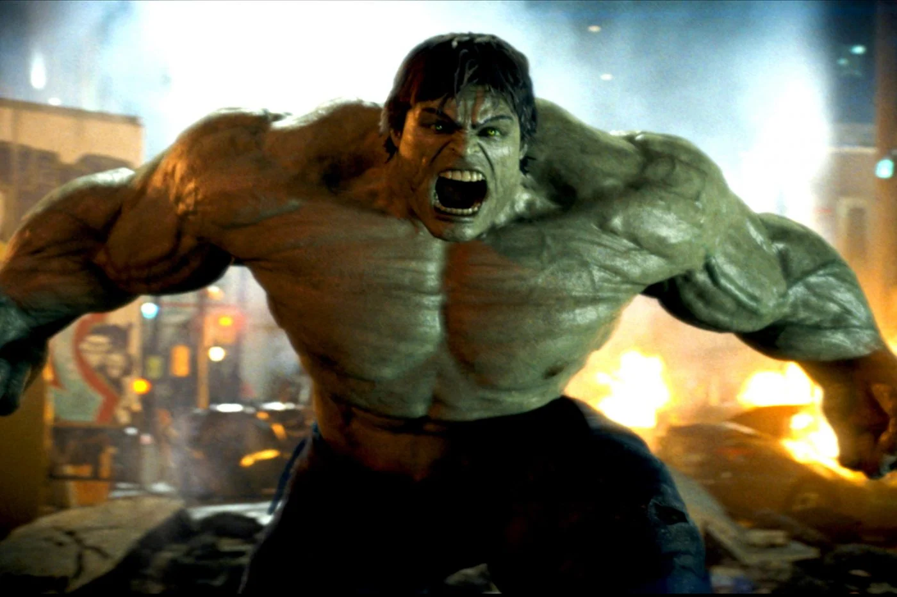
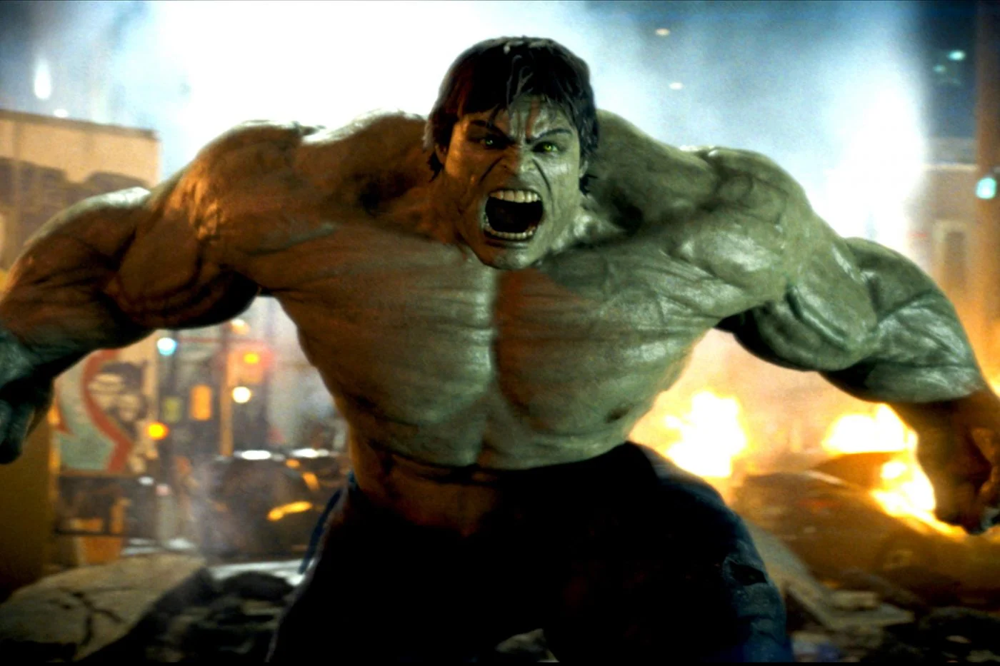
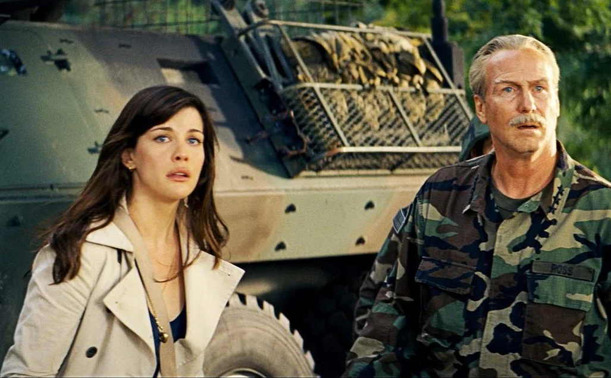
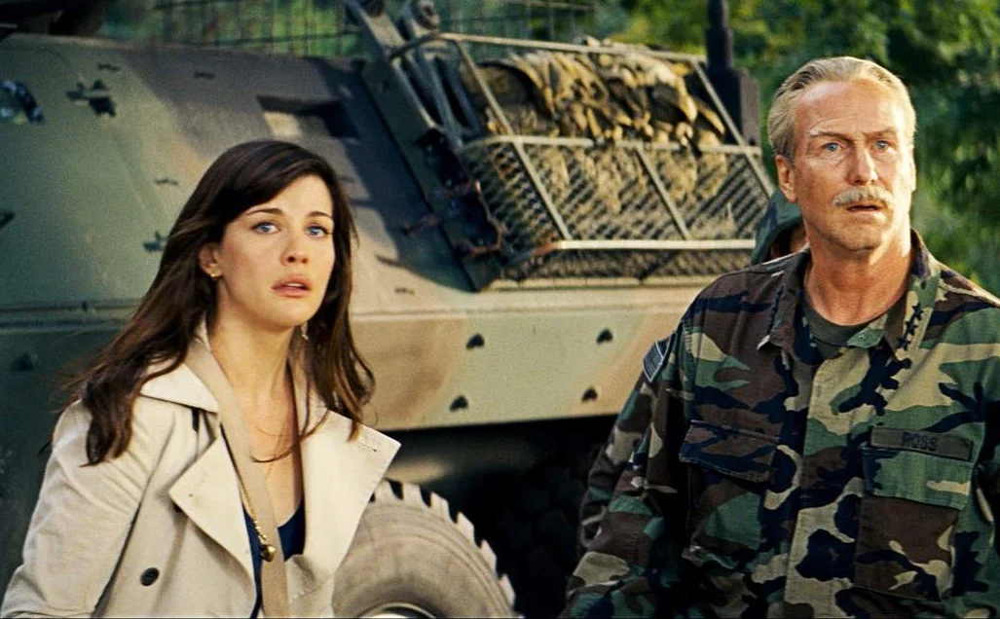

 

Vie de Bruce Banner
est un scientifique brillant mais tourmenté
par un événement. Après avoir été exposé à une dose massive de rayons gamma lors d'une expérience
scientifique, Banner se transforme en Hulk, une créature géante
et surpuissante dotée d'une force phénoménale lorsqu'il est en colère ou sous pression.
Contraint de fuir et de se cacher pour éviter d'être capturé par l'armée, Banner parcourt le monde à la
recherche d'un remède à sa condition. Pendant ce temps, il est traqué par le général Thaddeus Ross, qui
voit en Hulk une menace pour la sécurité nationale.
Au cours de son périple, Banner entame une relation avec Betty
Ross, la fille du général Ross, et trouve
des alliés inattendus, notamment le scientifique Samuel Sterns. Cependant, ses efforts pour se guérir et
contrôler sa transformation sont constamment entravés par les tentatives du gouvernement de l'arrêter.
Finalement, Banner découvre qu'il ne peut pas se débarrasser définitivement de sa condition de Hulk,
mais il apprend à accepter cette partie de lui-même. Il se prépare alors à une vie de fuite perpétuelle,
tout en espérant pouvoir utiliser ses pouvoirs pour aider les autres.